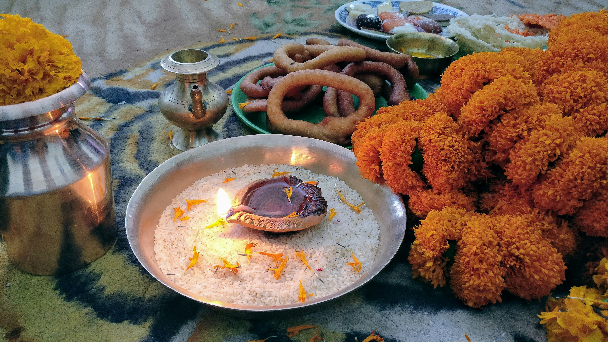

Sel Roti

Description:
Sel Roti is a traditional Nepali sweet bread ring-shaped, made from rice flour
and deep-fried. It's often prepared during festivals and special occasions.
Ingredients:
- 2 cups rice flour
- 1 cup ripe mashed bananas
- 1 cup sugar
- 1/2 teaspoon cardamom powder
- Oil for frying
Steps:
-
In a bowl, mix rice flour, mashed bananas, sugar, and cardamom powder to
form a thick batter.
- Heat oil in a deep frying pan.
-
Pour a ladleful of batter into the hot oil in a circular motion to form a
ring shape.
- Fry until golden brown on both sides.
- Remove from oil and drain excess oil on paper towels.
- Serve hot or at room temperature.